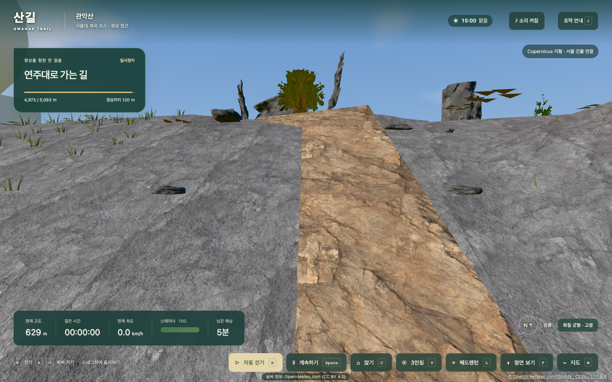
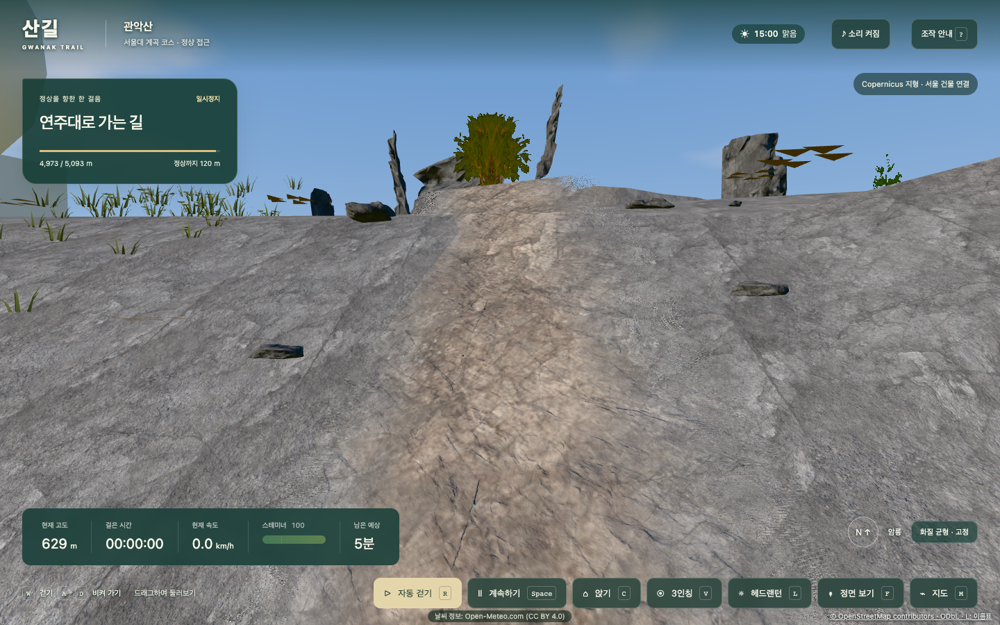
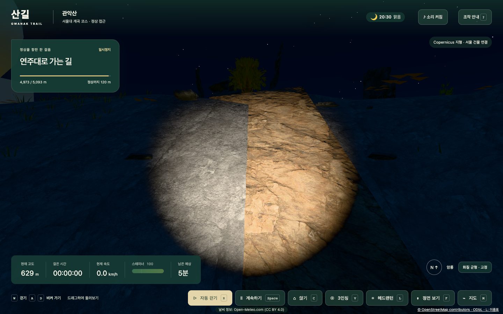
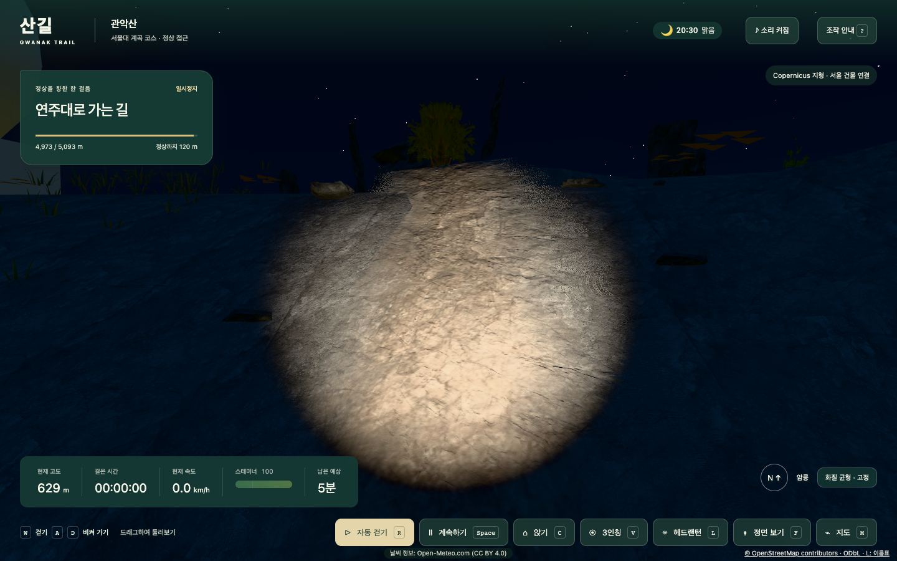
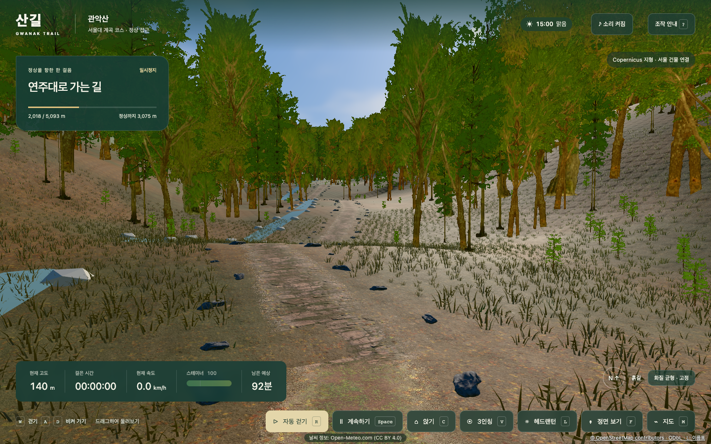
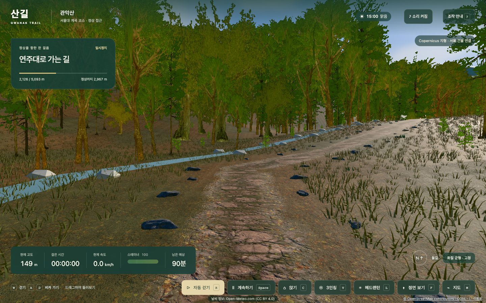
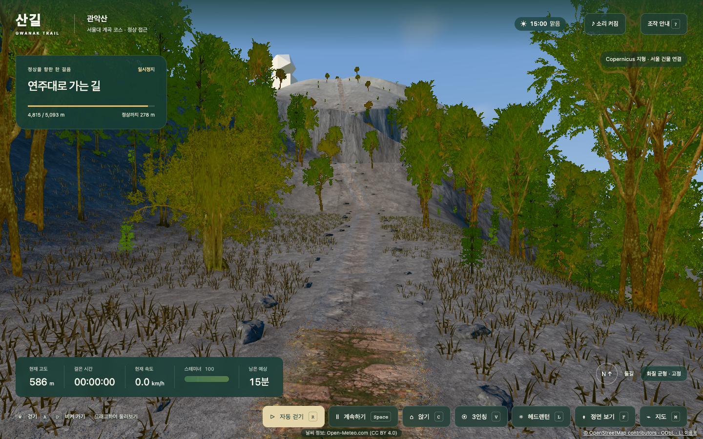

노면 재질 경계 블렌딩 — 전후 비교 (1440×900, 맑음, 1인칭)
① 정상 근처 4,973m 암릉 — 낮 15:00

전: 회색 지형과 주황 암릉 노면이 직선으로 끊김
후: 가장자리를 지형 화강암 색으로 바꾸고 노이즈 마스크로 녹임① 정상 근처 4,973m 암릉 — 밤 20:30 헤드랜턴

전
후② 다른 구간 노면 경계 (후)

2구간 흙길→돌길 전환(1,998m)
2구간 숲속 돌길 가장자리(2,100m)
6구간 돌길→암릉 전환(4,795m)